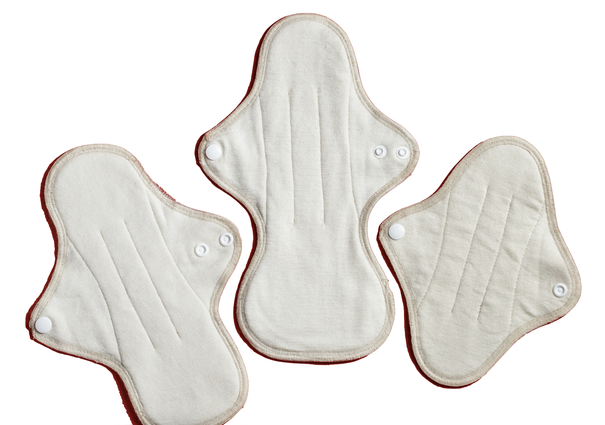
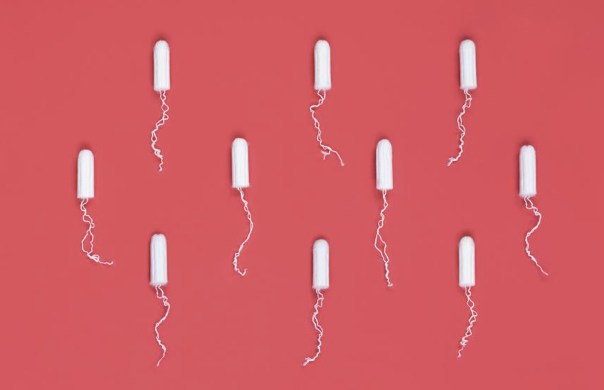
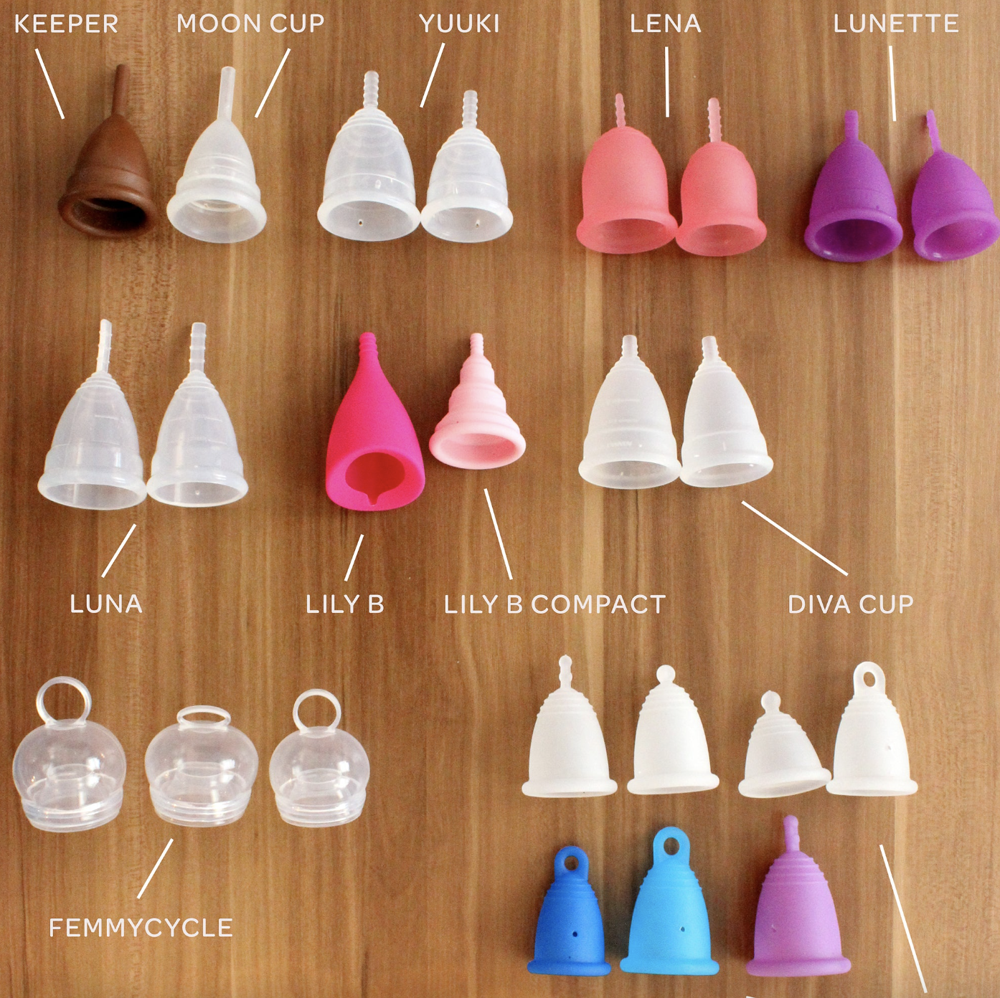
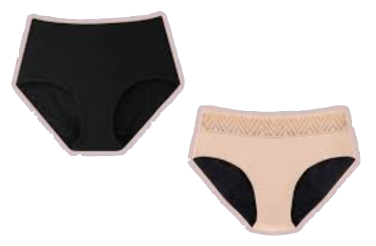
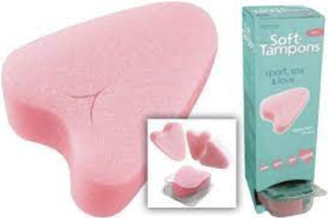

Period Fax
scroll down to learn more about basic period products

 Pads are non reusable and soak up menstrual flow, and should be thrown away after 8-10 hours of use. They should never be flushed down the toilet. Although they are not environmentally friendly, they are easy to use and convenient to buy in local pharmacies or stores. Packs of pads range from about $2 to $8.
Reusable pads can be washed and reused after a single wear throughout a day. They are convinient to use and are extremely environmentally friendly, but they recquire more work in having to wash them for each use. A single reusable pad costs about $12 to $35.
Pads are non reusable and soak up menstrual flow, and should be thrown away after 8-10 hours of use. They should never be flushed down the toilet. Although they are not environmentally friendly, they are easy to use and convenient to buy in local pharmacies or stores. Packs of pads range from about $2 to $8.
Reusable pads can be washed and reused after a single wear throughout a day. They are convinient to use and are extremely environmentally friendly, but they recquire more work in having to wash them for each use. A single reusable pad costs about $12 to $35.


Tampons are to be inserted into the vagina and kept there for 4-6 hours, nothing more. It is pulled out with a string. It is not reusable, and it is about $4 to $9 per pack. However, there is a small risk of developing TSS (Toxic Shock Syndrome) when using menstural products that are inserted within the body. To reduce this, always switch out the tampons at least every 8 hours and remove it before sleeping.
Menstrual cups are inserted into the vagina and catch menstrual flow, and should be switched and watched every 8-10 hours. They are soft, do not leak or spill, and are very convenient for swimming and excercising. They are environmentally friendly as well, and costs $35 to $50, but it lasts for many years.


Period underwear feels like normal underwear, and are very absorbant. They are good for those with a light flow, or a backup if one has a heavy flow. They are convient and environmentally friendly due to their resuability, and costs about $25 to $45.
Soft tampons are like regular tampons, but stringless, but due to this they are difficult to remove. They are about $30 for a pack of 10.

 DONATE/PICK UP
LOCATIONS
WHAT IS THE TAX
PERIOD FAX
TTT GAME
DONATE/PICK UP
LOCATIONS
WHAT IS THE TAX
PERIOD FAX
TTT GAME